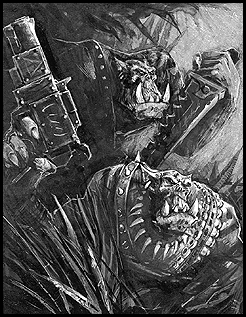

Imperial Forces |
Force Disposition Introduction |
Ork Forces |
|
Ork Telly-Porta Boyz Ghazghkull's initial assault upon Armageddon was a master stroke of lightning fast attacks, backed by a solid army of colossal proportions. The combination of huge land forces aided by fighta-bommerz and bombardments from his fleet in orbit around the world proved capable of crushing any initial resistance from the beleaguered defenders. Central to this cunningly planned assault was the use of teleporter technology. Wherever Orks forces faced resistance too tough to break with conventional methods, mobs and war machines were recklessly teleported directly into combat. This proved crucial in silencing Armageddon's ground-based defences, allowing the full weight of Ghazghkull's armies to land on the planet. Later in the war, the teleporter arrays on board the Rok-Fortresses were utilised to teleport mobs of Orks into the midst of pitched battles, always causing great confusion to the forces of the Imperium. However, the Orks have never perfected their use of the unstable teleporter technology and accidents are fairly common. |
Forces of the Great Despot of Dregruk
Despot Gazgrim's War Horde
Warlord Thogfang's Gargant Big Mob
Warlord Rukgor's Gargant Big Mob
Warlord Badfang's Battle Forts
Black Slayers Tribe
Firebellies Tribe
Varga's Drop Legion Razor Speed Freeks (Estimated 7 'artillery' warbands)
| ||||||||||||||||||||||||||||||||||
|
Whole mobs may be teleported miles away from their planned destination, or may materialise a mile above the battlefield before plummeting to their deaths. Others simply disappear, never to be seen again. Consequently, Orks are rarely keen to entrust their lives to their insane Meks and volunteers are few for this duty, so Telly-Porta Mobs are generally formed of those Orks who have severely displeased their Warboss. |
|||||||||||||||||||||||||||||||||||
|
Telly-Porta Boyz
Squad: The mob consists of between ten and twenty Boyz. Weapons: All models may be equipped with either a Shoota or a Slugga and Choppa. It is permissible to mix these weapon types throughout a single mob. Options: Up to three models can have either a Big Shoota at +15 pts, Rokkit Launcha at +10 pts or a Burna at+6 pts. Character: For an extra +12 pts, one boy may be upgraded to a Nob and be given any equipment allowed from the Ork armoury.
| |||||||||||||||||||||||||||||||||||